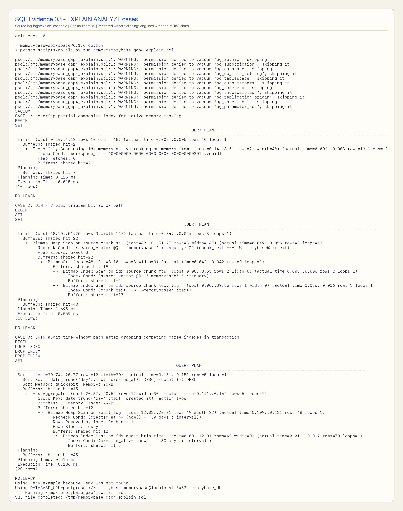
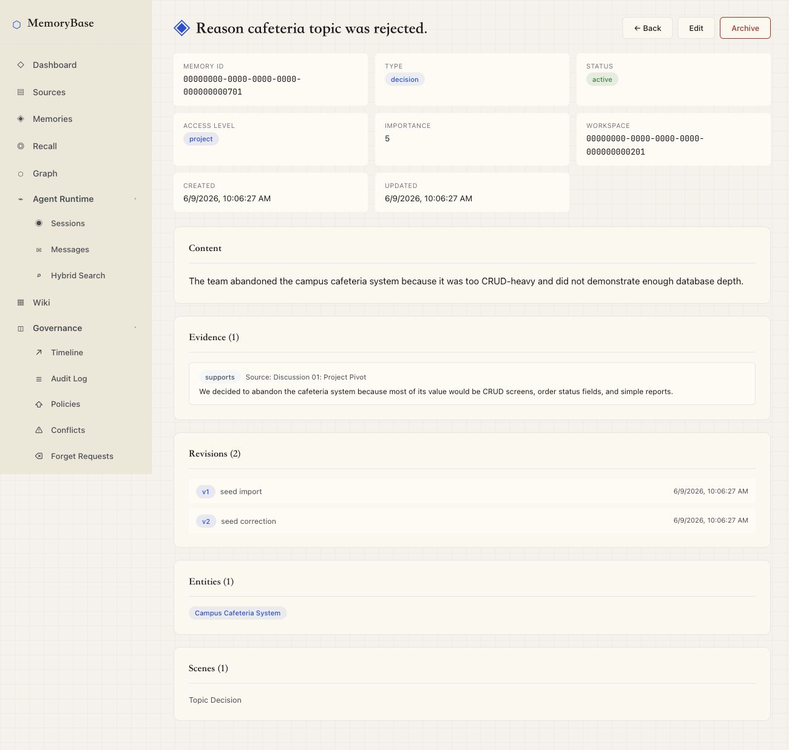
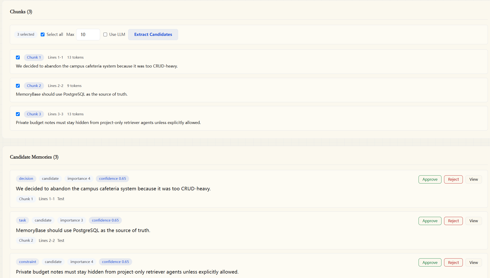
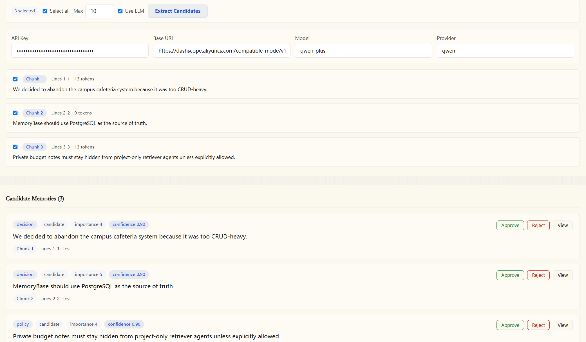
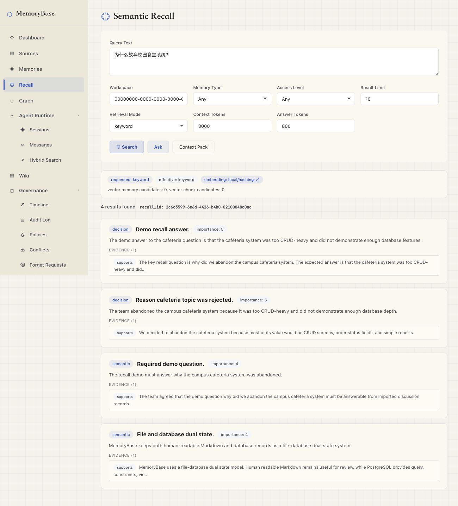
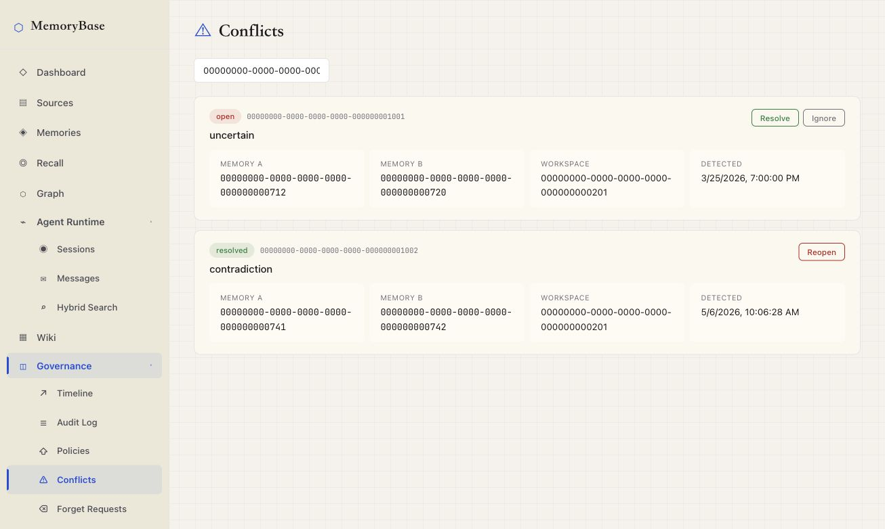
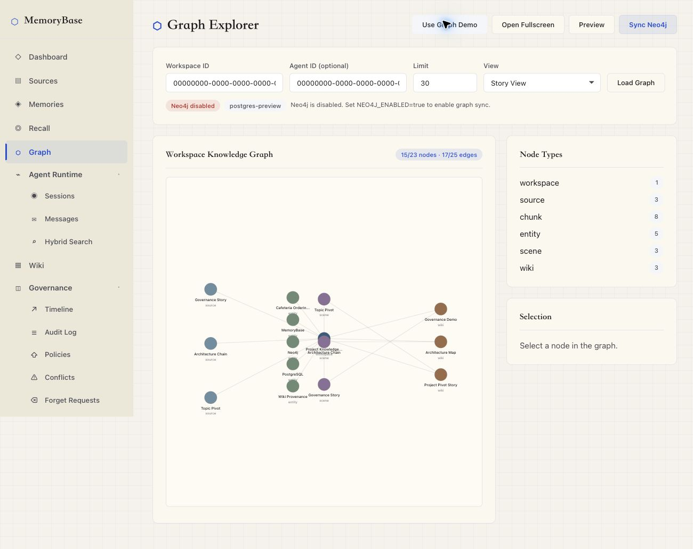

AI Agent 与团队协作系统持续产生会议纪要、讨论、决策、偏好与变更，传统做法把它们留在 Markdown、聊天历史或文件树里。
· 信息散落，难统一查询
· 修改无法回放、无 actor、无审计
· Agent 缺可靠权限边界，只能靠 prompt 自律
· 遗忘 / 冲突缺少审批链与可验证状态
· 难以回答“这条结论来自哪一段原文”
把人类可读的 Markdown、会议纪要与项目文档，编译为人和 Agent 都能访问、可追溯、可权限控制、可审计、可版本化的长期记忆数据库。
同时, 我们完整呈现了其概念结构、ER、范式、物理设计、索引、视图、触发器与 SQL 证据。
我们吸收它们的强项；差异主要发生在数据库这一层。
| 传统 RAG / 向量检索 | LangChain、LlamaIndex、Pinecone、ChromaDB | 语义召回强，但把 chunk / memory / evidence / revision / audit / policy 当业务对象建模的较少 |
| Agent 长期记忆系统 | MemGPT / Letta、Mem0、MemoryBank、LongMem | 关心“模型记得并用上”，较少展示 schema、外键、范式、触发器、审计链与 SQL 可验证性 |
| 产品化记忆 / 企业知识库 | ChatGPT Memory、Confluence AI / Rovo、Notion AI、Obsidian / Logseq | 体验成熟，但不开放底层关系 schema、触发器、SQL EXPLAIN 与多租户权限策略 |
| 长期记忆评测 + GraphRAG | LoCoMo、LongMemEval、MemoryAgentBench、GraphRAG | 提供基准与图增强思路；MemoryBase 把 evaluation 与 graph 作为验证与可视化层，不替代 DB 主线 |
长期记忆不是孤立文本，而是带来源、版本、权限、审计与表达投影的数据库对象。
SourceDocument
└── SourceChunk
└── MemoryItem
├── MemoryEvidence (chunk + 行号)
├── MemoryRevision (版本)
├── AuditLog (操作回放)
├── AccessPolicy (权限过滤)
├── RecallLog (检索证据)
└── WikiPage
└── WikiPageRevision
· 25 张核心关系表（主线 11 张节选）：source_document、source_chunk、memory_item、memory_evidence、memory_revision、audit_log、access_policy、wiki_page、conflict_record、forget_request、recall_log
· 8 个核心视图：v_active_memory / v_memory_with_source / v_agent_visible_memory / v_project_timeline / v_conflict_memory / v_wiki_page_sources / v_memory_statistics / v_memory_recall_statistics
· 7 个业务触发器（另有 7 个 _touch 维护 updated_at）：memory revision / audit / soft delete + conflict lifecycle + wiki revision
· 8 种索引：B+ tree / GIN tsvector / GIN trigram / partial / partial unique / composite / BRIN / covering

核心业务表以 3NF / BCNF 为主；少量派生字段做受控反规范化，显式标注并用 GENERATED 或 trigger 保持一致。
| 核心业务表（多数） | 3NF / BCNF | source_document、memory_evidence、memory_revision、audit_log、access_policy、conflict_record、forget_request 等 |
| memory_item.search_vector | ⚠ 反规范化 | tsvector，GENERATED ALWAYS AS 自动维护，供 GIN FTS |
| memory_item.current_revision_no | ⚠ 反规范化 | 触发器自动维护，供短列表 Index Only Scan |
| source_chunk.search_text_zh | ⚠ 反规范化 | dirty-bit cache，避免每次召回再拼接原文 |
| wiki_page.markdown_body | ⚠ 反规范化 | 维度投影 / 人类可读输出，由 service 同步写 |
| audit_log（追加写） | BCNF | append-only，BRIN 索引专属场景 |
· B+ tree (B-link 变种) — 30+ composite，叶子兄弟指针
· GIN tsvector — idx_memory_fts、idx_source_chunk_fts
· GIN trigram — 任意位置子串模糊匹配
· Partial — WHERE status='active' 过滤
· Partial unique — idx_policy_global_unique
· Composite leading-key — workspace_id 优先 (多租户标准)
· BRIN — audit_log(created_at) append-only 教科书场景
· Covering (INCLUDE) — idx_memory_active_ranking 走 Index Only Scan

· v_active_memory — 排除 forgotten / archived
· v_memory_with_source — provenance 拼接
· v_agent_visible_memory — 权限过滤
· v_project_timeline — 时间线投影
· v_conflict_memory — 冲突状态
· v_wiki_page_sources — wiki 引用追溯
· v_memory_statistics — 课程指标
· v_memory_recall_statistics — 召回统计
· trg_memory_before_update — revision 累加
· trg_memory_after_insert — 写 audit_log
· trg_memory_after_update — 写 audit_log
· trg_memory_soft_delete — 状态变更
· trg_conflict_after_insert — 冲突初始化
· trg_conflict_after_update — 冲突 lifecycle
· trg_wiki_revision_after_insert — wiki 版本追加
完整性约束：PK / FK / UNIQUE / CHECK 枚举 (status × 7、evidence_role × 4、principal_type × 3、effect × 2) / NOT NULL / GENERATED ALWAYS。
前端、CLI、Agent Runtime 与 evaluation runner 是围绕同一事实源的不同入口。
Human / Admin / Agent / Evaluation Runner
|
v
React Frontend mb / memorybase CLI
\ /
v v
FastAPI Backend
(API · Service · Repository)
|
v
PostgreSQL <--optional--> Neo4j
|
v
Markdown Wiki / Context Pack / Eval Report
· API layer — backend/app/api/*.py：HTTP endpoints + Pydantic contract
· Service layer — backend/app/services/*.py：source / memory / recall / governance / graph / embedding / QA
· Core — backend/app/core/*.py：配置、DB 连接
· CLI — backend/app/cli/：mb / memorybase 命令，覆盖 health / context / recall / search / observe / remember / sessions / eval
· Tests — backend/tests/：API、service、evaluation、PostgreSQL integration
任意一条 memory 都可追到 SourceChunk 行号、改写历史与操作者。

memory_evidence + 触发器自动维护同一组三条 chunk，默认 rule_based 与 optional Qwen-compatible LLM 给出了不同的类型判断与 confidence。


rule_based；LLM 只提升 candidate 语义质量，结果仍写入 status='candidate' 并需要人工审批keyword / vector / hybrid 三种模式；无 embedding 时透明 fallback 到 keyword，并写入 retrieval_info。

retrieval_info 写明 effective_mode、fallback_reason、vector_used;Context Pack 投影为 Agent-ready Markdown

| API / service | test_sources.py、test_memories.py、test_recall_query.py |
source 导入、memory CRUD、召回 |
| Governance | test_governance.py、test_graph_service.py |
policy / audit / conflict / forget / graph visibility |
| CLI / Agent Runtime | test_cli_context.py、test_cli_recall.py、test_cli_sessions.py、test_cli_writeback.py |
context / recall / observe / remember 全链路 |
| Evaluation | test_evaluation_* |
adapters / metrics / judging / checkpoint / report |
| PostgreSQL integration | test_postgres_integration.py |
schema / seed / trigger / batch create / supersession |
| Frontend | npm run lint + npm run build |
React 生产构建 |
评测在我们这里只用来验证工程能力、暴露弱项，不是榜单卖点。
| Cases | 500 |
| API errors | 0 |
| Deterministic pass | 176 / 500 (35.2%) |
| Semantic judge pass | 292 / 500 (58.4%) |
| Semantic judge fail | 208 / 500 (41.6%) |
| Abstention (强项) | 93.3% |
| Temporal update (强项) | 80.6% |
| Single fact (强项) | 79.2% |
| Temporal reasoning | 52.8% |
| Preference following (弱项) | 36.7% |
| Multi-session reasoning (弱项) | 27.3% |
把 AI 长期记忆从黑盒能力变成 PostgreSQL 里可验证的关系模型。LLM、embedding、Graph、eval 都是围绕 DB 事实源的增强层。
memory_evidence / v_memory_with_source / v_wiki_page_sources / recall_log 可回答 “来自哪里、谁用过、改成什么”。
revision / audit / conflict / forget / policy 是核心表 + 触发器,状态变更全可用 SQL 验证。
Agent 是独立 principal,通过 access_policy + v_agent_visible_memory 把权限过滤放进数据库查询路径。
支持 keyword / vector / hybrid。无 embedding 时透明 fallback 并在 retrieval_info 中记录 effective_mode + fallback_reason。
默认是离线可演示的 rule_based 抽取；可选 LLM 只负责生成 status='candidate' 草稿,仍要绑定 evidence、记录 run-level audit,并经人工审批后才进入 active。
Graph Explorer 用 PostgreSQL 构图,可选同步 Neo4j。图层只做可视化,权威仍在 DB 里。
接入 LoCoMo / LongMemEval / MemoryAgentBench adapters。系统因此能跑长期记忆基准,把真实边界一起暴露出来。
· 林纪帆 (hopecommon / jflin) — DB schema、治理与溯源模型、lexical search、context-pack formatter、CLI dogfood、Graph hardening、最终报告与答辩材料
· 杜卓轩 (dzx0902 / dzx) — P0 backend、evaluation framework、LoCoMo / LongMemEval / MemoryAgentBench adapters、embedding / hybrid recall、QA、CI / tooling
· 李昭成 (huiyijian / lywzc0419) — 前端 API 集成、Memory / Recall / Governance 等核心页面交互实现，Runtime / Governance UI、Neo4j Graph Explorer 初版集成，将 PostgreSQL 中的 memory、source、evidence 等关系投影为 provenance 图谱，用于记忆来源追踪与图可视化展示
· 王星睿 (Cofstars) — source extraction workflow、optional LLM candidate extraction、相关 source UI , CLI , API , tests / final report 和 ppt
· 当前仅实现 optional LLM candidate extraction → 后续引入 analysis_run / analysis_memory_draft / analysis_draft_evidence 草稿表
· JSONB embedding cache → 引入 pgvector / HNSW / IVFFlat 支撑大规模向量
· LongMemEval 弱项 → 增强 multi-session reasoning、preference following
· memory-level visibility → 扩展 source / wiki 资源 policy
· 完善 LoCoMo / MemoryAgentBench 对照实验 + 独立 judge
· Obsidian / Git 双向同步与多 Agent 协作